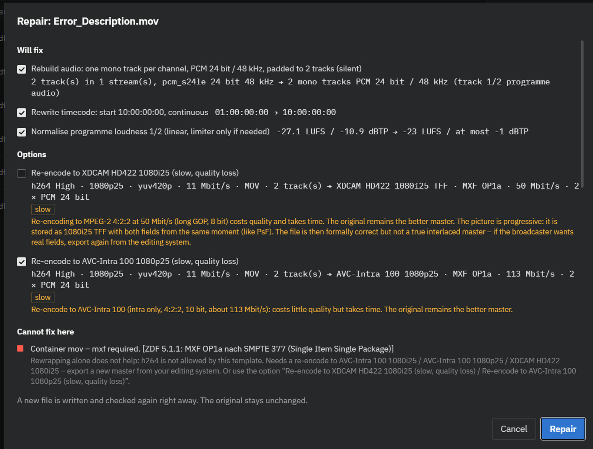
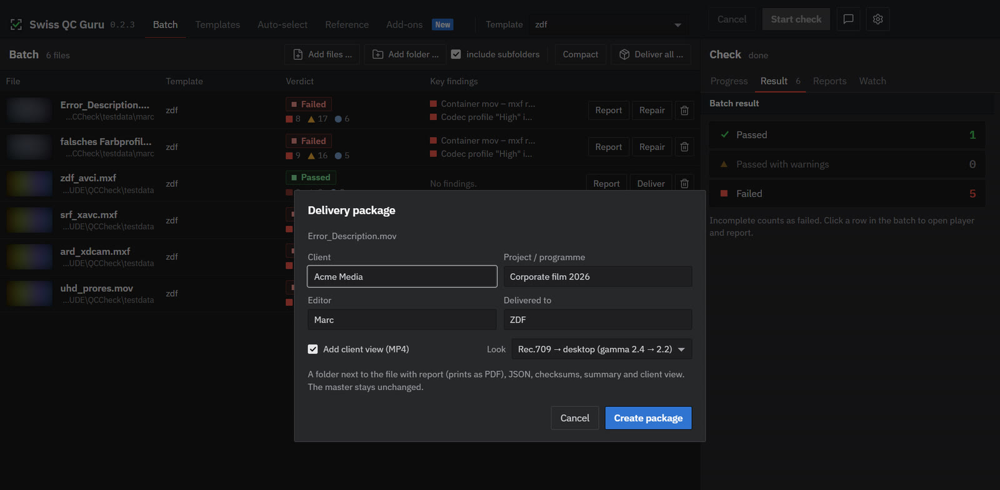
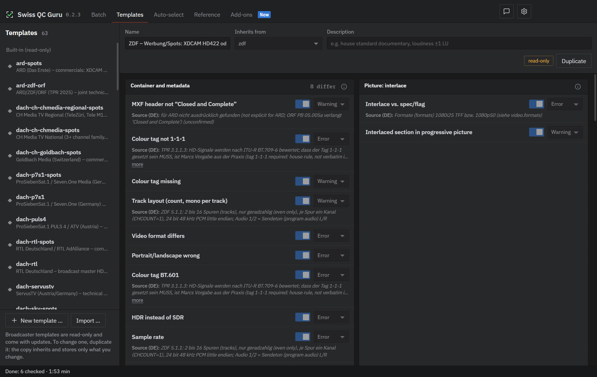
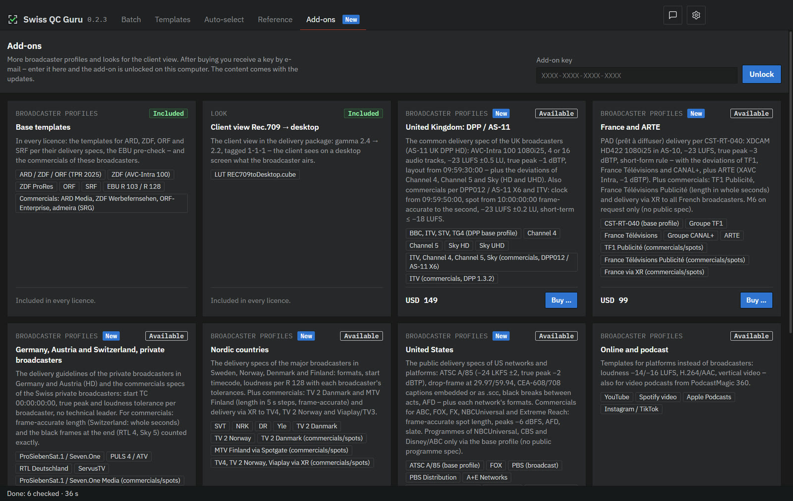

GuideAnleitung
Swiss QC Guru in ten minutesSwiss QC Guru in zehn Minuten
Drop the master in, pick the broadcaster, start. Everything else on this page is for the moment you need it.Master hineinziehen, Sender wählen, starten. Alles Weitere auf dieser Seite ist für den Moment, in dem Sie es brauchen.
- First checkErste Prüfung
- Templates and strictnessVorlagen und Prüfstufe
- Several templates at onceMehrere Vorlagen auf einmal
- Results and playerErgebnis und Player
- RepairReparieren
- DeliverLiefern
- Watch folderWatch Folder
- Own templates and rulesEigene Vorlagen und Regeln
- ReferenceReferenz
- Licence and add-onsLizenz und Add-ons
- SettingsEinstellungen
- Command lineKommandozeile
- Help and feedbackHilfe und Rückmeldung
BatchStapel
First checkErste Prüfung
- Add files. Drag files or folders onto the window, or click it to choose. MXF, MOV, MP4, WAV, IMF and DCP folders. “include subfolders” takes everything below a folder.Dateien hinzufügen. Dateien oder Ordner ins Fenster ziehen oder hineinklicken und wählen. MXF, MOV, MP4, WAV, IMF- und DCP-Ordner. „mit Unterordnern“ nimmt alles unterhalb eines Ordners.
- Pick the template. At the top for the whole batch, or per file in its row. “Automatic (rules)” picks one by your rules.Vorlage wählen. Oben für den ganzen Stapel oder je Datei in ihrer Zeile. „Automatisch (Regeln)“ wählt nach Ihren Regeln.
- Start check. Progress per stage on the right. Each row then shows its verdict and the most important findings.Prüfung starten. Rechts der Fortschritt je Stufe. Danach zeigt jede Zeile ihr Urteil und die wichtigsten Befunde.

- Verdicts: Passed, Passed with warnings, Failed. Incomplete (a check could not run) counts as failed.Urteile: Bestanden, Bestanden mit Warnungen, Durchgefallen. Unvollständig (eine Prüfung konnte nicht laufen) zählt als durchgefallen.
- Reports are written next to the file in a folder
QC-Reports: HTML (prints as PDF) and JSON.Berichte liegen neben der Datei im OrdnerQC-Reports: HTML (druckt als PDF) und JSON. - Last batch: after a restart the empty window offers “Open last batch”. Files already checked come back with their result, as long as the reports are still there and the file has not changed.Letzter Stapel: nach einem Neustart bietet das leere Fenster „Letzten Stapel öffnen“ an. Schon geprüfte Dateien kommen mit ihrem Ergebnis zurück, solange die Berichte noch da sind und die Datei unverändert ist.
- Compact makes the rows smaller for long batches.Kompakt macht die Zeilen kleiner für lange Stapel.
TemplatesVorlagen
Templates and strictnessVorlagen und Prüfstufe
A template is a broadcaster's or platform's delivery spec: format, codec, start timecode, levels, loudness and so on, each value with its source. The list of templates is on Broadcasters.Eine Vorlage ist das Pflichtenheft eines Senders oder einer Plattform: Format, Codec, Start-Timecode, Pegel, Lautheit usw., jeder Wert mit seiner Quelle. Die Liste der Vorlagen steht unter Sender.
- Practice (default, next to the template at the top) keeps only tolerances that have a source, e.g. EBU R 103 counts gamut errors only above 1 % of the picture.Praxis (Vorgabe, oben neben der Vorlage) lässt nur Toleranzen mit Quelle zu, z. B. zählt EBU R 103 Gamut-Fehler erst ab 1 % des Bildes.
- Spec (strict) checks the template exactly as written.Pflichtenheft (streng) prüft die Vorlage genau wie geschrieben.
- Loudness, True Peak, format, colour tags, black and freeze frames and flashes are strict in both.Lautheit, True Peak, Format, Farbkennzeichnung, Schwarz- und Standbilder und Blitze sind in beiden streng.
Full versionVollversion
Several templates at onceMehrere Vorlagen auf einmal
For distribution, co-productions and campaigns: one file against several broadcasters. The file is measured once and judged per template, about 2.5 times faster than one by one.Für Vertrieb, Koproduktionen und Kampagnen: eine Datei gegen mehrere Sender. Gemessen wird einmal, geurteilt je Vorlage – etwa 2,5-mal schneller als einzeln.
- In the row's template list, right below “Automatic”: Choose several …In der Vorlagen-Liste der Zeile, gleich unter „Automatisch“: Mehrere wählen …
- Tick the templates. Save them as a group (e.g. “My broadcasters”) to pick them again with one click. “For all waiting files” applies the choice to the whole batch.Vorlagen ankreuzen. Als Gruppe speichern (z. B. „Meine Sender“), um sie mit einem Klick wieder zu wählen. „Für alle wartenden Dateien“ gilt für den ganzen Stapel.
- Start. The row shows ✓ ▲ ■ per template with the main reason. Click a template for its player and report, Matrix for the overview.Starten. Die Zeile zeigt ✓ ▲ ■ je Vorlage mit dem Hauptgrund. Klick auf eine Vorlage öffnet Player und Bericht, Matrix die Übersicht.
Build version: for a template that fails, the wrench builds a repaired copy for exactly that broadcaster (e.g. film_uk-dpp.mxf) and checks it again. The original stays untouched.Fassung bauen: für eine Vorlage, die nicht besteht, baut der Schraubenschlüssel eine reparierte Kopie für genau diesen Sender (z. B. film_uk-dpp.mxf) und prüft sie nach. Das Original bleibt unverändert.
Player
Results and playerErgebnis und Player
Click a row (or Details) to open the player. The Report tab next to it is the full report.Klick auf eine Zeile (oder Details) öffnet den Player. Der Reiter Bericht daneben ist der ganze Bericht.

- Findings list: errors first, then warnings and info (folded). The same check at several places is one line (“· 12 places”); click to unfold and jump.Befundliste: zuerst die Fehler, dann Warnungen und Info (zugeklappt). Gleiche Prüfung an mehreren Stellen ist eine Zeile („· 12 Stellen“); Klick klappt auf und springt hin.
- Timeline: every finding as a marker per lane, loudness and waveform below. Keys: ← → frame, Shift 1 s, J K L, ↑ ↓ next finding.Zeitleiste: jeder Befund als Marke je Spur, darunter Lautheit und Wellenform. Tasten: ← → Bild, Shift 1 s, J K L, ↑ ↓ nächster Befund.
- Picture tools (view only): safe areas 4:3 / 16:9 / 9:16, zebra, false colour, pixels, edges, single fields, scopes.Bildwerkzeuge (nur Ansicht): Safe Areas 4:3 / 16:9 / 9:16, Zebra, Falschfarben, Pixel, Kanten, Halbbilder einzeln, Scopes.
- Accept a finding with a note when it is intended (e.g. a black opener). It stays in the report, marked as accepted.Einen Befund mit Notiz akzeptieren, wenn er gewollt ist (z. B. ein schwarzer Auftakt). Er bleibt im Bericht, als akzeptiert markiert.
- Markers … saves every finding for the edit: Resolve EDL, Premiere XML, FCPXML, CSV.Marker … speichert jeden Befund für den Schnitt: Resolve-EDL, Premiere-XML, FCPXML, CSV.
Full versionVollversion
RepairReparieren
For emergencies, when there is no time to go back to the edit: Repair shows a plan (what gets fixed, what cannot be and why), writes a new file next to the original (…_QC-fixed) and checks it again. It fixes loudness, start timecode, pre- and post-roll, levels and the container. The clean way remains the correction in the edit or finishing project; the markers show you every place.Für den Notfall, wenn keine Zeit für den Schnitt bleibt: Reparieren zeigt einen Plan (was behoben wird, was nicht geht und warum), schreibt eine neue Datei neben das Original (…_QC-korrigiert) und prüft sie nach. Behoben werden Lautheit, Start-Timecode, Vor- und Nachlauf, Pegel und der Container. Sauber bleibt die Korrektur im Schnitt- oder Finishing-Projekt; die Marker zeigen dort jede Stelle.

Full versionVollversion
DeliverLiefern
Deliver (per file) or Deliver all … builds a folder for the customer: report (prints as PDF), JSON, markers, checksums and a short summary. Optionally a client view (MP4 with gamma 2.4 → 2.2, so it looks right on an office screen).Liefern (je Datei) oder Alle liefern … baut einen Ordner für den Kunden: Bericht (druckt als PDF), JSON, Marker, Prüfsummen und eine kurze Zusammenfassung. Wahlweise mit Kundenansicht (MP4 mit Gamma 2.4 → 2.2, damit es auf einem Büro-Bildschirm stimmt).

Full versionVollversion
Watch folderWatch Folder
In the Watch tab on the right: choose a folder and switch it on. Every new file is checked as soon as it has been copied completely, with the template from your rules; optionally with a delivery package per file. Results appear in the batch.Im Reiter Überwachung rechts: Ordner wählen und einschalten. Jede neue Datei wird geprüft, sobald sie fertig kopiert ist, mit der Vorlage nach Ihren Regeln; wahlweise mit Lieferpaket je Datei. Die Ergebnisse erscheinen im Stapel.
Templates · Auto-selectVorlagen · Auto-Auswahl
Own templates and rulesEigene Vorlagen und Regeln
- Templates tab: an own template starts from a broadcaster template and stores only what you change: each check on or off, its level and thresholds. Export it as a file to hand your house standard to freelancers. Broadcaster templates stay read-only and come with updates.Reiter Vorlagen: eine eigene Vorlage geht von einer Sender-Vorlage aus und speichert nur, was Sie ändern: jede Prüfung an oder aus, ihre Stufe und Schwellen. Als Datei exportieren, um den Haus-Standard an Freie weiterzugeben. Sender-Vorlagen bleiben schreibgeschützt und kommen mit Updates.
- Auto-select tab: rules like “folder contains ZDF and codec is ProRes → template X”. The first rule that matches wins; “Automatic (rules)” uses them.Reiter Auto-Auswahl: Regeln wie „Ordner enthält ZDF und Codec ist ProRes → Vorlage X“. Die erste passende Regel gewinnt; „Automatisch (Regeln)“ nutzt sie.

ReferenceReferenz
What each check doesWas jede Prüfung tut
The Reference tab lists every check with what it measures and the values of each broadcaster template; quotes from the specs stay word for word. From a finding in the player, “Open in reference” jumps there.Der Reiter Referenz listet jede Prüfung mit dem, was sie misst, und den Werten jeder Sender-Vorlage; Zitate aus den Pflichtenheften stehen im Wortlaut. Von einem Befund im Player springt „In der Referenz öffnen“ dorthin.
LicenceLizenz
Licence and add-onsLizenz und Add-ons
- Demo: checks the whole file and shows half of the findings. Deliver, repair, markers, PDF, client view, several templates and the watch folder need the full version.Demo: prüft die ganze Datei und zeigt die Hälfte der Befunde. Liefern, Reparieren, Marker, PDF, Kundenansicht, mehrere Vorlagen und Watch Folder brauchen die Vollversion.
- Licence: one key per computer, no time limit. Enter it under Settings › Licence. “Release this computer” frees it for another one.Lizenz: ein Schlüssel je Rechner, unbefristet. Eintragen unter Einstellungen › Lizenz. „Diesen Rechner freigeben“ macht ihn für einen anderen frei.
- Add-ons tab: more broadcaster and platform packs, looks for the client view and Complete (all packs, also future ones). What you have comes first under “Your add-ons”. A pack's key goes into the field at the top of the tab.Reiter Add-ons: weitere Sender- und Plattform-Pakete, Looks für die Kundenansicht und Complete (alle Pakete, auch künftige). Was Sie haben, steht zuoberst unter „Ihre Add-ons“. Den Schlüssel eines Pakets ins Feld oben im Reiter eintragen.

SettingsEinstellungen
Settings and updatesEinstellungen und Updates
- Language: English or German for the window, findings, reports and delivery packages.Sprache: Englisch oder Deutsch für Fenster, Befunde, Berichte und Lieferpakete.
- Privacy: an anonymous usage count once a day (version, Windows or Mac, demo or licence, language, a random ID of this installation) – only if you agree. Files are checked locally and never uploaded.Datenschutz: eine anonyme Nutzungszählung einmal am Tag (Version, Windows oder Mac, Demo oder Lizenz, Sprache, eine zufällige Kennung dieser Installation) – nur wenn Sie zustimmen. Geprüft wird lokal, nichts wird hochgeladen.
- Back up settings: export and import templates, rules and settings, for a second computer or as a backup.Einstellungen sichern: Vorlagen, Regeln und Einstellungen exportieren und importieren, für einen zweiten Rechner oder als Sicherung.
- Updates: when a new version is out, a blue “Update” button appears in the title bar. One click installs it; every package is checked against its signature.Updates: gibt es eine neue Version, erscheint oben ein blauer Knopf „Update“. Ein Klick installiert sie; jedes Paket wird gegen seine Signatur geprüft.
TerminalTerminal
Command lineKommandozeile
The installer also sets up qccheck, for scripts and render farms. Exit code: 0 passed, 1 failed, 2 incomplete.Der Installer richtet auch qccheck ein, für Skripte und Renderfarmen. Exit-Code: 0 bestanden, 1 durchgefallen, 2 unvollständig.
qccheck film.mxf --profile zdf
qccheck film.mxf --profiles ard-zdf-orf,srf,uk-dpp
qccheck fix film.mxf --profile zdf
qccheck deliver film.mxf --profile zdf --customer "…"
qccheck watch D:\Abgabe --recursive --deliverSupportSupport
Help and feedbackHilfe und Rückmeldung
The speech bubble in the title bar sends feedback straight to us, with a screenshot if you like. Or write to support@vannuffel.ch. A broadcaster missing? Send us its delivery spec.Die Sprechblase oben in der Titelleiste schickt eine Rückmeldung direkt an uns, auf Wunsch mit Bildschirmfoto. Oder schreiben Sie an support@vannuffel.ch. Ein Sender fehlt? Schicken Sie uns sein Pflichtenheft.
Swiss QC Guru is a technical pre-check. It does not replace the broadcaster's acceptance, and the flash check is not a Harding test.Swiss QC Guru ist eine technische Vorprüfung. Sie ersetzt nicht die Abnahme des Senders, und die Blitz-Prüfung ist kein Harding-Test.